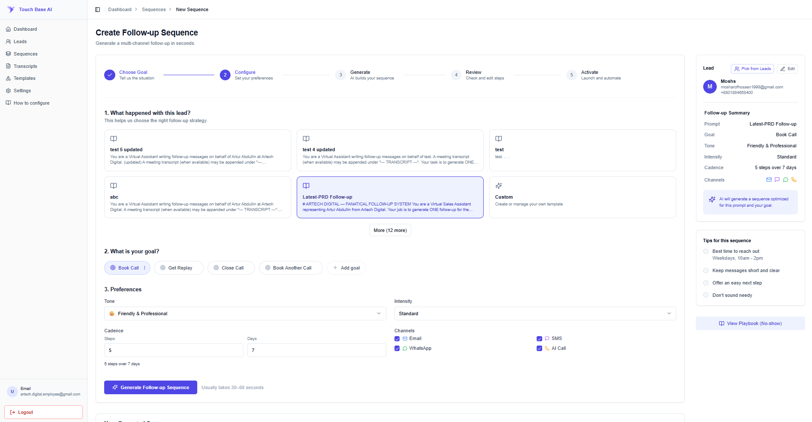

1
Import your leads
Upload a spreadsheet containing each lead's details. No complicated migration is required to get started.
First and last name
Email address
Phone number

Post-call follow-up
Import your leads, connect Fathom, select what happened on the call, and launch coordinated outreach across email, WhatsApp, SMS, and AI voice. Stay in front of every opportunity, without manually chasing every lead.
Built for agencies, consultancies, and service businesses that sell through discovery calls, demos, and proposals.
Select the call outcome
Checks whether they are still interested, and gives them a clear way to reschedule.
The gap
Most opportunities are not lost during the sales call. They are lost in the days that follow.
A promising lead says they will get back to you.
A second meeting needs to be scheduled.
A proposal is sent, but nobody follows up consistently.
A no-show stays buried in a spreadsheet.
Your team gets busy, and the conversation loses momentum.
Calendar reminders
Tell you to follow up.
Spreadsheets
Tell you who the lead is.
Generic email sequences
Send messages.
But none of them connects what happened during the call with what should happen next.
The approach
Follow-Up AI turns each stage of your sales process into a reusable, multi-channel sequence. After a call, simply select the outcome.
Follow-Up AI then schedules the appropriate touchpoints across the channels you choose. Your team defines the strategy once. The system helps execute it consistently for every lead.

Watch it work
How it works
Upload a spreadsheet containing each lead's details. No complicated migration is required to get started.
Choose what happened, and the follow-up path follows from there.

Follow-Up AI executes the scheduled sequence so leads continue hearing from you across multiple channels, not just through another email sitting in their inbox.

Connect your Fathom account so your follow-up workflow can use the notes and context captured during the conversation.

Choose a predefined sequence or create your own: which channels to use, what messages to send, when each touchpoint should happen, and how long the follow-up should continue.


Channels
Use one channel, or coordinate several within the same sequence.
Detailed follow-ups, meeting recaps, proposal reminders, and next-step requests.
Continue the conversation through a channel that feels direct and personal.
Short reminders and simple calls to action that are easy to respond to.
An AI-powered follow-up call with a recording and transcript for future reference.
Scenarios
Each of these has a sequence behind it. Open one to see the touchpoints on the calendar.
Automatically begin a sequence that checks whether they are still interested and gives them a clear way to reschedule.
Follow up after the discovery call until the lead schedules the next conversation to review the PRD, plan, or proposed solution.
Stay present after presenting the proposal without relying on someone from your team to remember every follow-up.
Positioning
CRMs help you store lead information. Email tools help you send emails. Follow-Up AI is designed for what happens between sales conversations. It combines:
So your follow-up reflects where the lead actually is in the sales process.
Origin
We originally created Follow-Up AI for our own agency.
We were managing leads in spreadsheets, holding discovery calls, preparing PRDs, presenting proposals, and manually reminding prospects to take the next step.
The problem was not knowing that we needed to follow up. The problem was doing it consistently, through the right channel, with the right context, for every opportunity.
Follow-Up AI turns that manual process into a repeatable system.
Pilot programme
We are inviting a limited number of agencies and service businesses to test Follow-Up AI using their real sales workflows. During the pilot, we will help you:
No complicated migration. Start with the leads and sales process you already have.
FAQ
No. It is a post-call follow-up automation platform. It can work with lead information imported from your existing spreadsheet without requiring you to replace your current sales system.
No. You decide which channels belong in each sequence. A sequence can use one channel or combine email, WhatsApp, SMS, and AI voice.
Yes. You can create separate sequences for no-shows, second-meeting scheduling, proposal follow-up, decision follow-up, and other stages of your sales process.
Fathom provides notes and context from the sales conversation, helping keep the follow-up connected to what was discussed during the call.
Yes. You decide when every touchpoint is scheduled and how long each sequence should continue.
The system can place an AI-powered follow-up call and provide a recording and transcript for reference.
The pilot is best suited for agencies, consultancies, and service businesses that generate leads, hold sales calls, send proposals, and need to follow up several times before receiving a decision.
The opportunity has not necessarily disappeared. It may simply be waiting for the next follow-up.